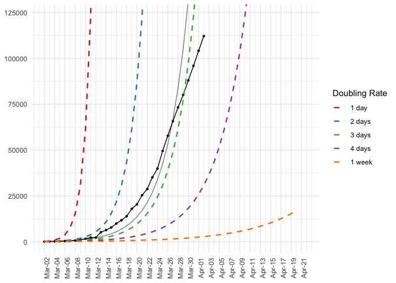
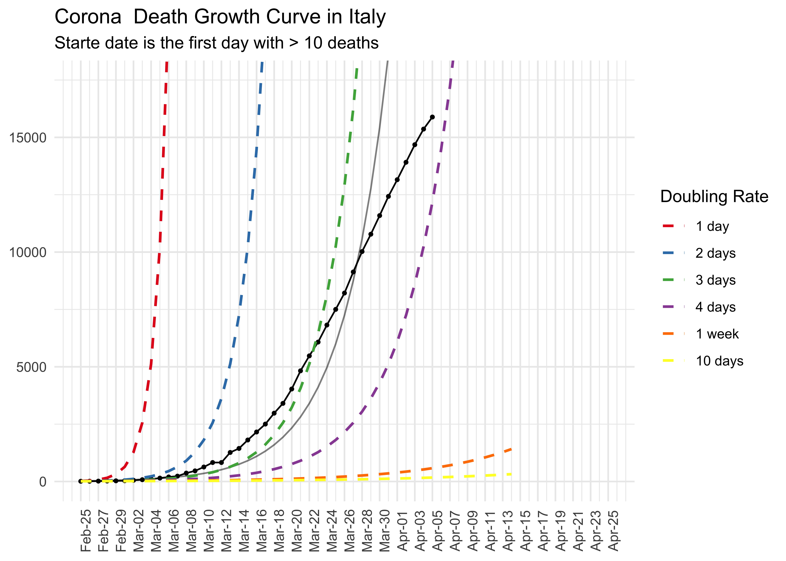
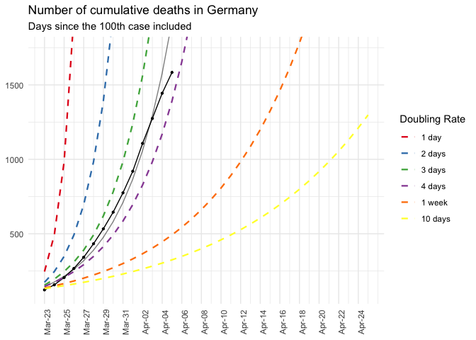
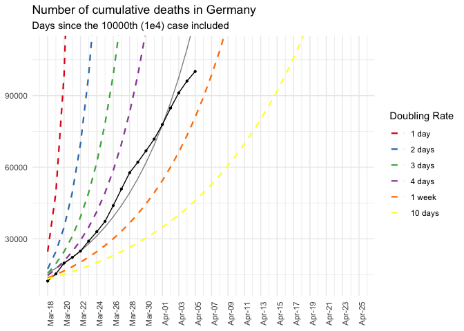
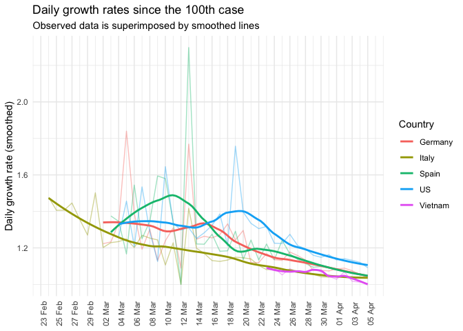
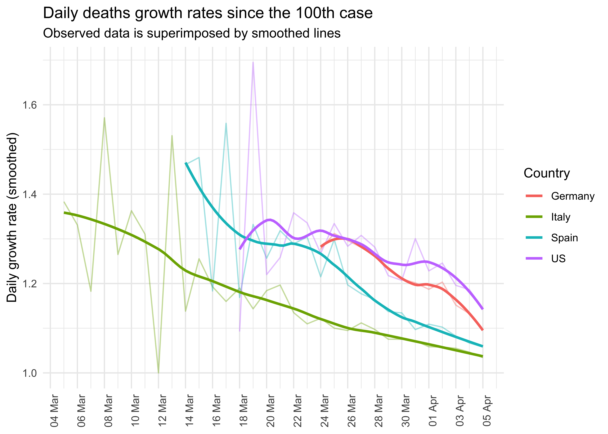

This package support to import, prepare, model and visualize the data about COVID19 infections from the Johns Hopkins University github repository.
You can install the released version of corona from github with:
install.packages("devtools") devtools::install_github("jnshsrs/corona")
To load the dataset, just call read_corona(). The function will fetch the latest data from the JHU github repository.
Opposed to the JHU github data, which is structured in a wide format (each day has a column and each row represents a country), this dataset is rearranged into a long format where each country and day reprents a row.
library(dplyr, warn.conflicts = FALSE) library(corona) # Import the corona data <- read_corona() data #> # A tibble: 19,875 x 7 #> country date Lat Long infections deaths recoveries #> <chr> <date> <dbl> <dbl> <dbl> <dbl> <dbl> #> 1 Afghanistan 2020-01-22 33 65 0 0 0 #> 2 Afghanistan 2020-01-23 33 65 0 0 0 #> 3 Afghanistan 2020-01-24 33 65 0 0 0 #> 4 Afghanistan 2020-01-25 33 65 0 0 0 #> 5 Afghanistan 2020-01-26 33 65 0 0 0 #> 6 Afghanistan 2020-01-27 33 65 0 0 0 #> 7 Afghanistan 2020-01-28 33 65 0 0 0 #> 8 Afghanistan 2020-01-29 33 65 0 0 0 #> 9 Afghanistan 2020-01-30 33 65 0 0 0 #> 10 Afghanistan 2020-01-31 33 65 0 0 0 #> # ⦠with 19,865 more rows
Additionally, the corona-package comes with reader functions for the three statistics, i.e., number of infections, number of deaths and number of recoveries, but these functions are mainly used as helper functions for the read_corona.
# Import numbers of infection read_infections() # Import numbers of deaths read_deaths() # Import number of recoveries read_recoveries()
To work with the data, we have to preprocess the data
# Prepare data data_germany <- data %>% preprocess_corona_data(statistic = "infections", countries = "Germany", n = 100)
# Predict the cases data_germany %>% predict_growth() #> # A tibble: 40 x 7 #> # Groups: country [1] #> country Lat Long date statistic day predicted_cases #> <chr> <dbl> <dbl> <date> <dbl> <int> <dbl> #> 1 Germany 51 9 2020-03-01 130 1 257. #> 2 Germany 51 9 2020-03-02 159 2 312. #> 3 Germany 51 9 2020-03-03 196 3 380. #> 4 Germany 51 9 2020-03-04 262 4 462. #> 5 Germany 51 9 2020-03-05 482 5 562. #> 6 Germany 51 9 2020-03-06 670 6 683. #> 7 Germany 51 9 2020-03-07 799 7 831. #> 8 Germany 51 9 2020-03-08 1040 8 1011. #> 9 Germany 51 9 2020-03-09 1176 9 1230. #> 10 Germany 51 9 2020-03-10 1457 10 1496. #> # ⦠with 30 more rows
# Data pipeline data %>% preprocess_corona_data(statistic = "infections", countries = "Spain", n = 100) %>% predict_growth() %>% plot_country(show_model = TRUE)

# Data pipeline data %>% preprocess_corona_data(statistic = "deaths", countries = "Italy", n = 10) %>% predict_growth() %>% plot_country(show_model = TRUE) + ggplot2::ggtitle("Corona Death Growth Curve in Italy", subtitle = "Starte date is the first day with > 10 deaths") #> Warning: Removed 1 row(s) containing missing values (geom_path).

The function lm_corona takes a preprocessed corona dataset (as tibble or dataframe) and returns a dataframe with the parameters of a exponential growth model.
The column base_rate and growth rate indicte the initial case numbers and the estimated growth across the entire time period.
data %>% preprocess_corona_data( countries = "Germany", statistic = "infections", n = 100 ) %>% lm_corona() #> # A tibble: 1 x 7 #> # Groups: country [1] #> country models r_sq lm_intercept lm_slope base_rate growth_rate #> <chr> <list> <dbl> <dbl> <dbl> <dbl> <dbl> #> 1 Germany <lm> 0.958 2.32 0.0851 211. 1.22
The funcition plot_country plots the exponential growth model for the given country (note that this function can process only one country, a function to compare countries is not available so far).
# Data pipeline data %>% preprocess_corona_data(statistic = "deaths", countries = "Germany", n = 100) %>% predict_growth() %>% plot_country(show_model = TRUE) + ggplot2::ggtitle("Number of cumulative deaths in Germany", "Days since the 100th case included") #> Warning: Removed 96 row(s) containing missing values (geom_path).

# Data pipeline data %>% preprocess_corona_data(statistic = "infections", countries = "Germany", n = 10000) %>% predict_growth() %>% plot_country(show_model = TRUE) + ggplot2::ggtitle("Number of cumulative deaths in Germany", "Days since the 10000th (1e4) case included") #> Warning: Removed 66 row(s) containing missing values (geom_path).

data %>% group_by(country, date) %>% summarise_at(c("infections", "deaths", "recoveries"), sum) #> # A tibble: 13,725 x 5 #> # Groups: country [183] #> country date infections deaths recoveries #> <chr> <date> <dbl> <dbl> <dbl> #> 1 Afghanistan 2020-01-22 0 0 0 #> 2 Afghanistan 2020-01-23 0 0 0 #> 3 Afghanistan 2020-01-24 0 0 0 #> 4 Afghanistan 2020-01-25 0 0 0 #> 5 Afghanistan 2020-01-26 0 0 0 #> 6 Afghanistan 2020-01-27 0 0 0 #> 7 Afghanistan 2020-01-28 0 0 0 #> 8 Afghanistan 2020-01-29 0 0 0 #> 9 Afghanistan 2020-01-30 0 0 0 #> 10 Afghanistan 2020-01-31 0 0 0 #> # ⦠with 13,715 more rows
library(ggplot2) data %>% preprocess_corona_data(statistic = "infections", countries = c("Germany", "Italy", "Spain", "US", "Vietnam"), n = 100) %>% mutate(daily_growth_rate = statistic / lag(statistic)) %>% filter(!is.na(daily_growth_rate)) %>% ggplot(aes(x = date, y = daily_growth_rate, col = country)) + geom_line(alpha = .4) + geom_smooth(method = "loess", se = FALSE, span = .55) + scale_y_continuous("Daily growth rate (smoothed)") + scale_x_date(breaks = seq(min(data$date), max(data$date), by = "2 days"), label = scales::date_format(format = "%d %b")) + scale_color_discrete("Country") + theme_minimal() + theme(axis.text.x = element_text(angle = 90), axis.title.x = element_blank()) + ggtitle("Daily growth rates since the 100th case", "Observed data is superimposed by smoothed lines") #> `geom_smooth()` using formula 'y ~ x'

library(ggplot2) data %>% preprocess_corona_data(statistic = "deaths", countries = c("Germany", "Italy", "Spain", "US", "Vietnam"), n = 100) %>% mutate(daily_growth_rate = statistic / lag(statistic)) %>% filter(!is.na(daily_growth_rate)) %>% ggplot(aes(x = date, y = daily_growth_rate, col = country)) + geom_line(alpha = .4) + geom_smooth(method = "loess", formula = "y ~ x", se = FALSE, span = .55) + scale_y_continuous("Daily growth rate (smoothed)") + scale_x_date(breaks = seq(min(data$date), max(data$date) + lubridate::days(3), by = "2 days"), label = scales::date_format(format = "%d %b")) + scale_color_discrete("Country") + theme_minimal() + theme(axis.text.x = element_text(angle = 90), axis.title.x = element_blank()) + ggtitle("Daily deaths growth rates since the 100th case", "Observed data is superimposed by smoothed lines")
